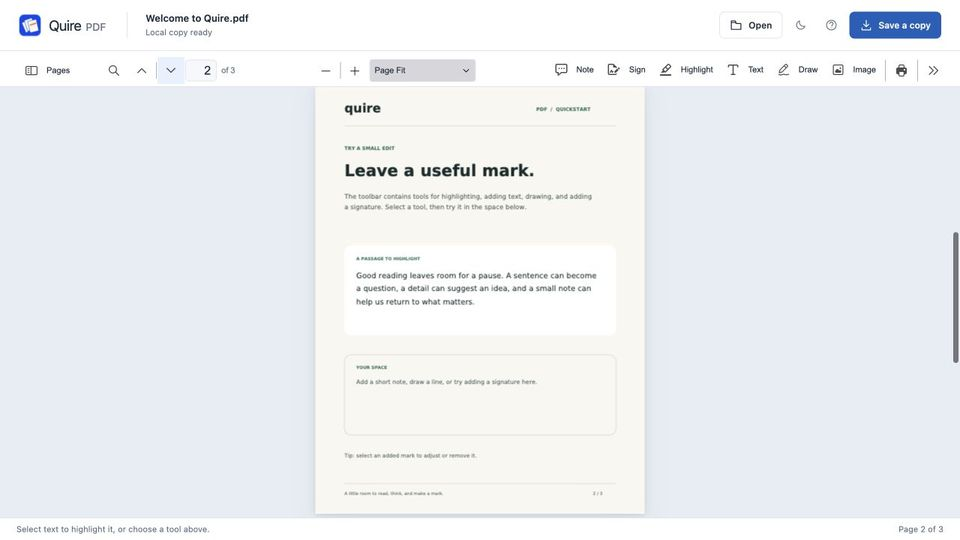

How to add an image to a PDF
Short answer: fewer free tools do this than you’d expect. Chrome’s PDF viewer has no image tool, Adobe says image editing isn’t in the free Acrobat Reader, and Apple’s Preview guide doesn’t describe placing a picture on a PDF page. Microsoft Edge on Windows can, and so can a Chrome extension such as Quire PDF.
Updated 15 October 2026. Edge details follow Microsoft’s Edge guide. Quire PDF is made by us.
Add an image with Quire PDF
Quire PDF is our Chrome extension. It processes the file on your computer, without uploading it.
- Install Quire PDF
Add Quire PDF from the Chrome Web Store. It’s free and needs no account.
- Open the PDF
Click the Quire PDF icon in Chrome’s toolbar and choose Open a PDF, or drop the file on the page.
- Choose Image
Choose Image in the toolbar and pick a picture from your computer.
- Move and resize it
Drag the image into place and resize it from its corners.
- Save a copy
Click Save a copy (Ctrl+S, or ⌘+S on a Mac). Quire downloads a new PDF with the image on it and leaves your original as it was.
The image is added on top of the page as a stamp annotation. It doesn’t replace anything underneath, and in our tests images placed in Quire showed up when the saved file was opened in other PDF software.

Add an image with Microsoft Edge
Microsoft’s guide to Edge’s PDF reader says you can add new text, images and shapes by selecting Add notes in the top toolbar, then save the PDF. Edge is the default PDF reader on Windows 10 and 11, so double-clicking a PDF usually opens it there. Microsoft doesn’t give more detailed steps, so look for the image option once Add notes is open.
What the other free tools can do
- Chrome’s PDF viewer: Google’s help lists drawing, highlighting, adding text and signing, but no images.
- Preview on a Mac: Apple’s guide covers text, shapes, notes and signatures, and says outright that you can’t edit a PDF’s text in Preview, but it doesn’t describe putting a picture on a PDF page.
- Adobe Acrobat Reader: Adobe says text and image editing isn’t available in the free Reader and needs a paid Acrobat subscription.
- LibreOffice Draw, free and open source, opens PDFs for editing. You can insert a picture there and export a new PDF. Complex layouts may not come through perfectly, so compare the result with the original.
Adding a signature image
If the picture is a scan of your signature, you probably don’t need it: Quire PDF’s Sign tool, Preview and a Chromebook’s Gallery app can all capture or draw a signature and reuse it. See how to sign a PDF without Adobe. Either way, a placed signature image isn’t a certificate-based digital signature.
Questions
Can I replace an image that’s already in the PDF?
Not with Quire PDF or the free viewers. You can place a new picture over the old one, but the original is still in the file. Changing existing content needs a full PDF editor.
Will adding an image make the file bigger?
Usually, yes. Resize large photos before you add them if the PDF needs to stay small for email or an upload form.